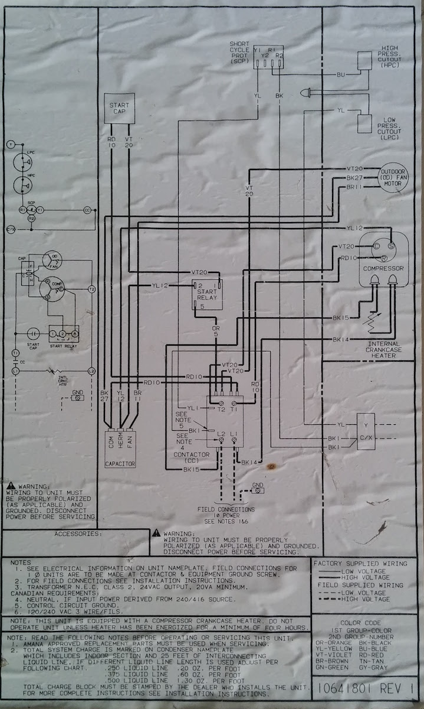
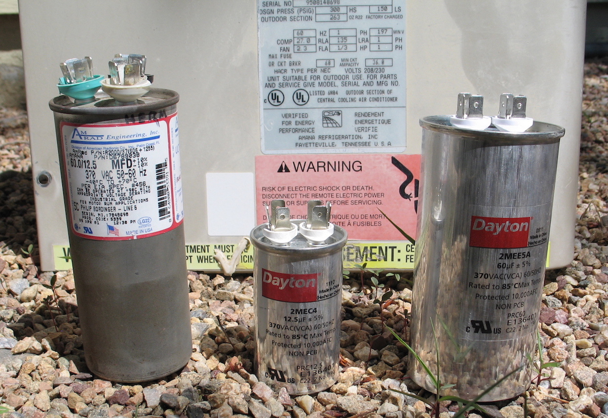

My central air conditioner wasn't generating cold air after starting it up for the first time this summer. I figured that being an electrical engineer, maybe I could figure out what's wrong with it before calling a repair person. The unit would turn on and off when the thermostat indicated, so it wasn't a control problem. Air was blowing out of the vents so the house fan was working fine. The outdoor cooling fan was running, but after listening closely I could hear that the compressor never actually turned on. After narrowing it down to the compressor I took off the outside unit's panel and luckily there was a schematic glued to the inside of the panel door. How helpful.

It's a really simple circuit and it seemed pretty clear that either the compressor was broken or the capacitor that starts the compressor was broken. These are big capacitors and when they go bad you can usually see it just by looking. Sure enough, the top of the capacitor was bent in a curve outwards. That's an obvious sign it's bad. The top of the capacitor should be as flat as (and the same basic shape of) a pancake. If you look carefully at the picture below, you can tell the difference. It's much easier to notice when you're holding it in your hand. The bad capacitor is in the bottom left corner of the schematic, labeled CAPACITOR with the three leads COM, HERM and FAN.

Now things got a little tricky. This particular air conditioner combines two capacitors into one, what's called a run-start or start-run capacitor. This combined capacitor is for starting the compressor motor and also running the outdoor fan. You can buy a new drop-in replacement combined capacitor but it's relatively expensive, maybe $50. I ended up getting two separate capacitors, one for running the fan motor and another for starting the compressor motor, and they cost about $5 for both. The wiring is a little different than the schematic above, but straightforward to make the modification. Just connect the common posts on the two capacitors together and make the same connections as the original combined capacitor.
The guys at my local electric motor repair shop were really helpful in getting the right sized capacitor for the job (big thank-you!). This is important because these capacitors take a heavy load at 240 VAC. (BTW, I don't recommend doing this unless you're comfortable with big appliances and high voltage. I opend the breaker, removed the fuses and checked with a voltmeter just to make sure power was off!) The other trick was finding space within the outside unit's control box for the extra capacitor (one became two). A few wire ties made it a simple job. After about fifteen minutes rerouting and soldering wires, then securing the new capacitors with wire ties, the air conditioner was starting and running like new. Hooray! My guess is I saved a several hundred dollar repair with $5 of parts and about an hour of my time. Plenty for a new pair of bike shoes.